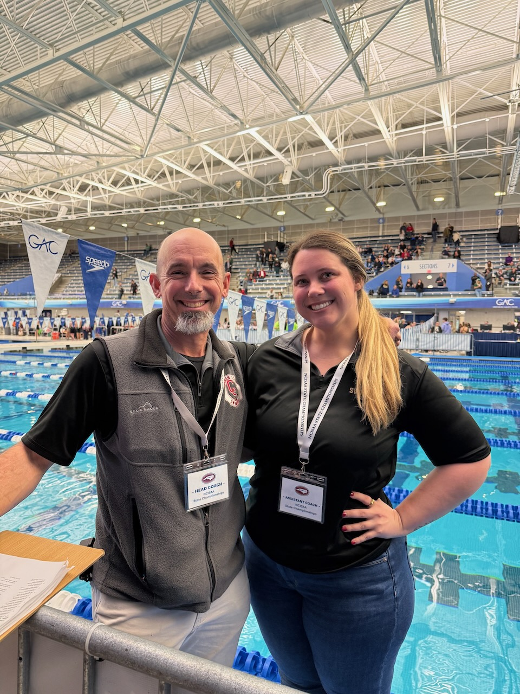

.jpg)

CANNON SCHOOL VARSITY SWIMMING
One Team.
One Family.
Everything AquaCoug, all in one place.STAY ON TRACK
Meets & Practices
Practice is Monday–Thursday, 6:15–7:15 AM, except on meet days or announced schedule changes. Check the AquaCoug team calendar for updates.
Season Meets & Events
Nov 10Preseason Scrimmage · Details TBD
Nov 17@ Charlotte Latin · Covenant Day, Charlotte Christian · V 6:30 PM
Dec 1Home · Covenant Day, Davidson Day · V 6:30 PM
Dec 8@ Charlotte Country Day · Hickory Ridge · V 6:30 PM (Varsity only)
Dec 16AquaCoug Holiday Party · 6 PM
Dec 17@ Charlotte Latin · Covenant Day, Carmel Christian · V 6:30 PM
Jan 7@ Charlotte Country Day · Charlotte Christian, Covenant Day, Lake Norman Charter · V 6:30 PM (Cannon entry to confirm)
Jan 12@ Charlotte Latin · Providence Day · V 6:30 PM
Jan 19Home · Davidson Day, NHCS (school name TBD) · Senior Night · V 6:30 PM
Jan 27CISAA Championship · Warm-up 2 PM, start 3 PM
Feb 8NCISAA State Championship · GAC
Feb 15Team Banquet · Details to follow
The December 12 Asheville meet was cancelled. Individual meet times and practice exceptions will be updated on the AquaCoug team calendar.
REP THE COUGARS
Team Gear & Suits
Cougars Swimming 2026 Team Store
Order team apparel and gear by November 19, 2026.
Required for all varsity swimmers: white zip-down hoodie and black long-sleeve shirt. Please include both items in your team store order.
Shop Team Gear ↗Suit Ordering Portal
Returning families: sign into TYR Teams. New families: register, select HIGH SCHOOL, then search for CANNON SCHOOL.
New Registration ↗Returning Swimmer Login ↗GOOD TO KNOW
Team Information
Practice
Monday–Thursday · 6:15–7:15 AM
West Cabarrus YMCA
Season begins November 2, 2026.
Come Prepared
Swimsuit, goggles (bring a backup), towel, and water bottle. Be ready to swim on time.
School Calendar
School breaks can affect practices. Check the AquaCoug team calendar for cancellations and changes.
Cannon Academic Calendar ↗Coaches

Coach Leigh Northrup
Coach Northrup has served as Cannon’s varsity swim coach and program director for the past 10 years, but his history with AquaCoug swimming goes back much further. Leigh started the program in 2001 with just four swimmers competing at the Kannapolis YMCA. Since those early days, the program has grown into a conference and state championship team, including state titles in 2004, 2005, and 2006.
Leigh attended Pfeiffer University and the University of Maryland. In addition to coaching, he serves as Cannon’s Dean of Innovation.
Coach Taylor
Coach Taylor is entering her 10th year of coaching high school swimming and her second season as an assistant coach for Cannon School’s AquaCougs. Previously, she served as a head swim coach for Cabarrus County Schools.
Taylor swam competitively for SwimMAC Carolina for 10 years and has spent the past 17 years teaching swim lessons. She also serves as the director and head coach of the Magnolia Springs Sharks summer league swim team.
Taylor is passionate about creating a positive team environment, building swimmers’ confidence, and helping athletes reach their full potential.